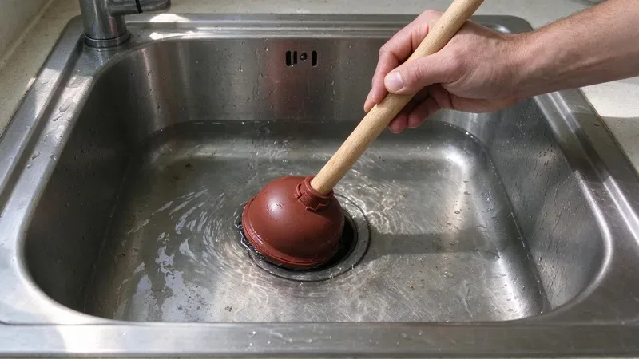

Plumbing Tips & Updates From BRV Plumbing
 15Oct, 2026
15Oct, 2026Slab Leak Warning Signs Every Alabama Homeowner Should Know
Discover the key indicators of a slab leak to protect your home's foundation and plumbing system.
 6Oct, 2026
6Oct, 2026How to Protect Your Pipes Before the Next Alabama Freeze
Winter freezes can cause serious damage to your Alabama home's plumbing. Learn how to prevent it.
 27Sep, 2026
27Sep, 2026Hard Water in Alabama: When a Water Softener Pays for Itself
Hard water is a common issue in Alabama homes, but a water softener can offer significant long-term savings.
 18Sep, 2026
18Sep, 2026Tankless vs. Tank Water Heaters: What Works Best in Alabama
Choosing between tankless and tank water heaters can be tough, so let's break down what works best here in Alabama.

9Sep, 2026Kitchen Sink Backups: Causes, Prevention and Quick Solutions
Don't let a clogged kitchen sink ruin your day. Learn why they happen and what to do.
 31Aug, 2026
31Aug, 2026Underground Pipe Damage: Common Causes and Modern Repair Solutions
Underground pipe problems can be a homeowner's worst nightmare, but modern solutions offer hope.
 22Aug, 2026
22Aug, 2026Hydro Jetting vs. Snaking: Which Drain Cleaning Method Do You Need?
Learn the best drain cleaning method for your home, hydro jetting or snaking.
 13Aug, 2026
13Aug, 2026Why a Sewer Camera Inspection Belongs on Every Alabama Home Inspection
Discover why a sewer camera inspection is a non-negotiable part of any Alabama home inspection.
Have a plumbing question we did not cover?
Our team is happy to talk it through and give you a straight answer.